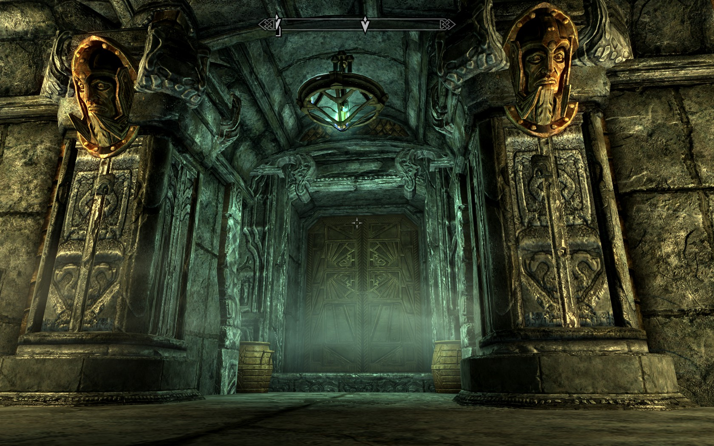
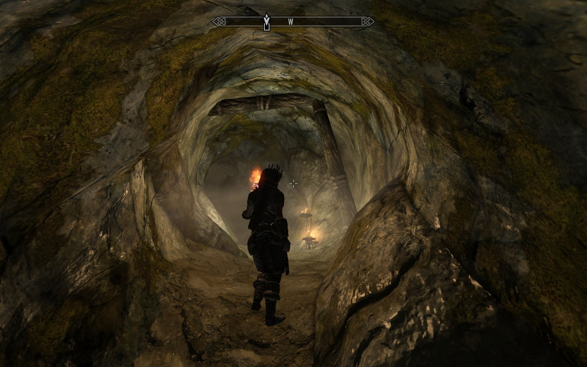
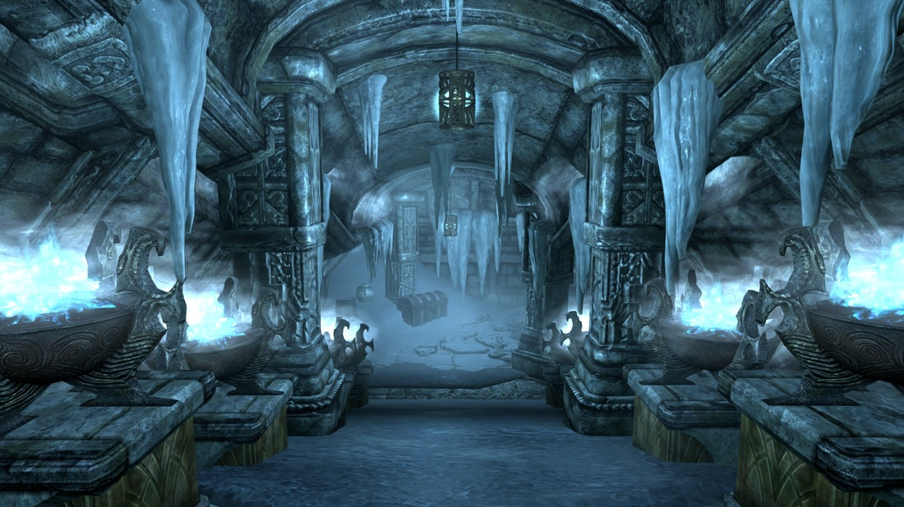

The scene is inspired from the action role playing game Skyrim in which the player completes several quests. The aim was to create a visually appealing scene that creates a sense of mystery and enigma. The images below are screenshots from the game which motivated us to create such a scene.
  
"You are not so far, from what lies within.
Bring forth wisdom and valor, to save your skin."
Karen is lost in the labyrinth of a strange world and she encounters a strange room. The room is mystic, and she senses danger. She is in a room with a gigantic door with an unusually large spider crawling on it on one end. Looking closely she realises that the spider is actually guarding that half open door. "What lies behind must be extremely precious, It has to be something or someway to escape", she realises. She knows, she has to get in. She looks around trying to decipher the mystery surrounding the room. The gargoyles - the epitome of wit and wisdom, the spider- the symbol of darkness and the darkness behind the door - the way out. She concludes, that its time to put her knowledge and strength to test.